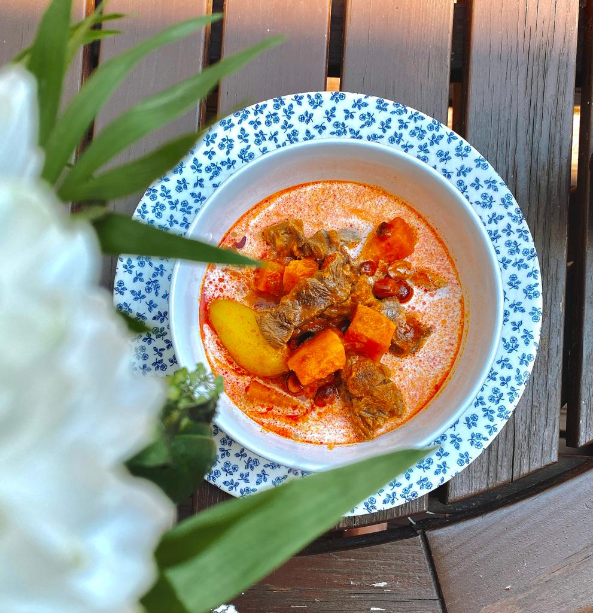

Firt thing first, INGREDIENT 😀
Boil beef with hot water in medium heat for 2 hours. And then peel potato, cut to small cube. Add them on the hot pot when beef meat gets soft.
Start to put all seasoning that we already repare to the pot. When it ready, stir well. Add cocunut milk on top for creamy favour, add peanut and you are ready to go.